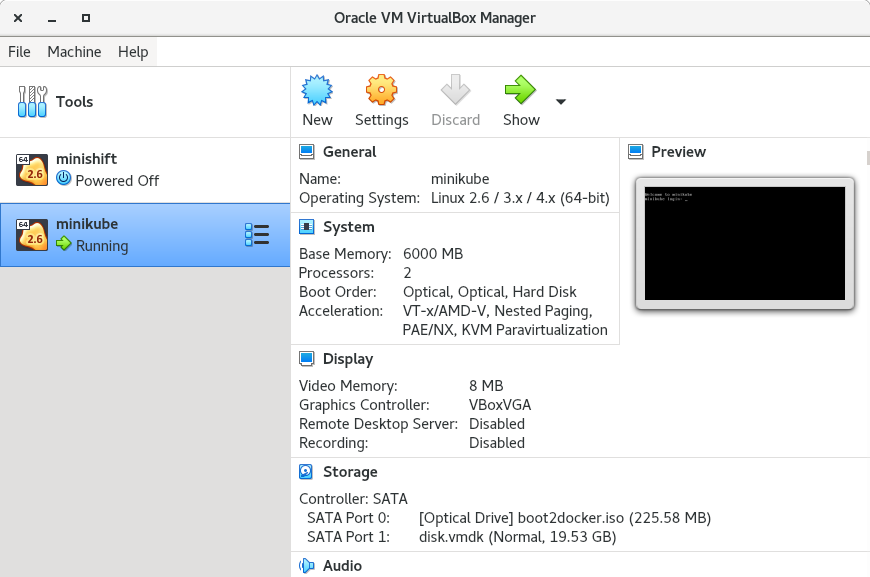

Install MetalLB in a minikube cluster
MetalLB is distributed as a minikube addon.
You can also consult the upstream project installation guide.
Set the virtualbox driver as default for minikube.
[user@host kbe]$ minikube config set driver virtualbox
❗ These changes will take effect upon a minikube delete and then a minikube start
Create a minikube instance.
[user@host kbe]$ minikube start
üòÑ minikube v1.24.0 on Redhat 8.5
✨ Using the virtualbox driver based on user configuration
üëç Starting control plane node minikube in cluster minikube
üî• Creating virtualbox VM (CPUs=2, Memory=6000MB, Disk=20000MB) ...
üê≥ Preparing Kubernetes v1.22.3 on Docker 20.10.8 ...
▪ Generating certificates and keys ...
▪ Booting up control plane ...
▪ Configuring RBAC rules ...
üîé Verifying Kubernetes components...
▪ Using image gcr.io/k8s-minikube/storage-provisioner:v5
üåü Enabled addons: storage-provisioner, default-storageclass
üèÑ Done! kubectl is now configured to use "minikube" cluster and "default" namespace by default
Wait until all pods are ready
[user@host kbe]$ kubectl get pods -n kube-system
NAME READY STATUS RESTARTS AGE
coredns-78fcd69978-mvjqv 1/1 Running 0 5m24s
etcd-minikube 1/1 Running 0 5m36s
kube-apiserver-minikube 1/1 Running 0 5m36s
kube-controller-manager-minikube 1/1 Running 0 5m36s
kube-proxy-kl6tc 1/1 Running 0 5m24s
kube-scheduler-minikube 1/1 Running 0 5m36s
storage-provisioner 1/1 Running 0 5m36s
Check the driver on which the minikube VM is created.
[user@host kbe]$ minikube profile list
|---------------|------------|---------|----------------|------|---------|---------|-------|
| Profile | VM Driver | Runtime | IP | Port | Version | Status | Nodes |
|---------------|------------|---------|----------------|------|---------|---------|-------|
| minikube | virtualbox | docker | 192.168.59.118 | 8443 | v1.22.3 | Running | 1 |
|---------------|------------|---------|----------------|------|---------|---------|-------|
Check the VirtualBox host-only network that the minikube VM is connected to.
Open the VirtualBox console, and select the minikube VM.
|  |
|---|
| VirtualBox console |
Scroll down on the right panel, and check the configuration parameters of the second network adapter to see on which host-only adapter the VM is connected to.
minikube VM network parameters |
Check the avaliable IP ranges for the VirtualBox host-only network.
Open the File menu and click Host Network Manager.
| VirtualBox console |
On the Host Network Manager window, click the properties button, select the appropriate vboxnet adapter and click on the DHCP Server tab.
Take note of the lower and upper address bounds.
 |
|---|
| VirtualBox host-only adapter DHCP settings |
Check if metallb is listed on the avaliable add-ons for minikube.
[user@host kbe]$ minikube addons list
|--------------------------|----------|------------|-----------------------|
| ADDON NAME | PROFILE | STATUS | MAINTAINER |
|--------------------------|----------|------------|-----------------------|
| ambassador | minikube | disabled | unknown (third-party) |
| auto-pause | minikube | disabled | google |
| csi-hostpath-driver | minikube | disabled | kubernetes |
| dashboard | minikube | disabled | kubernetes |
| default-storageclass | minikube | enabled ✅ | kubernetes |
| efk | minikube | disabled | unknown (third-party) |
| freshpod | minikube | disabled | google |
| gcp-auth | minikube | disabled | google |
| gvisor | minikube | disabled | google |
| helm-tiller | minikube | disabled | unknown (third-party) |
| ingress | minikube | disabled | unknown (third-party) |
| ingress-dns | minikube | disabled | unknown (third-party) |
| istio | minikube | disabled | unknown (third-party) |
| istio-provisioner | minikube | disabled | unknown (third-party) |
| kubevirt | minikube | disabled | unknown (third-party) |
| logviewer | minikube | disabled | google |
| metallb | minikube | disabled | unknown (third-party) |
| metrics-server | minikube | disabled | kubernetes |
| nvidia-driver-installer | minikube | disabled | google |
| nvidia-gpu-device-plugin | minikube | disabled | unknown (third-party) |
| olm | minikube | disabled | unknown (third-party) |
| pod-security-policy | minikube | disabled | unknown (third-party) |
| portainer | minikube | disabled | portainer.io |
| registry | minikube | disabled | google |
| registry-aliases | minikube | disabled | unknown (third-party) |
| registry-creds | minikube | disabled | unknown (third-party) |
| storage-provisioner | minikube | enabled ✅ | kubernetes |
| volumesnapshots | minikube | disabled | kubernetes |
|--------------------------|----------|------------|-----------------------|
üí° To see addons list for other profiles use: `minikube addons -p name list`
Enable the MetalLB minikube addon.
[user@host kbe]$ minikube addons enable metallb
▪ Using image metallb/controller:v0.9.6
▪ Using image metallb/speaker:v0.9.6
üåü The 'metallb' addon is enabled
Configure the IP addresses that can be used by MetalLB for the LoadBalancer services. The provided IP range for MetalLB must not overlap with the DHCP range for the host-only network adapter.
[user@host kbe]$ minikube addons configure metallb
-- Enter Load Balancer Start IP: 192.168.59.20
-- Enter Load Balancer End IP: 192.168.59.30
▪ Using image metallb/speaker:v0.9.6
▪ Using image metallb/controller:v0.9.6
✅ metallb was successfully configured
Review the applied settings
[user@host kbe]$ kubectl get configmap/config -n metallb-system -o yaml
apiVersion: v1
data:
config: |
address-pools:
- name: default
protocol: layer2
addresses:
- 192.168.59.20-192.168.59.30
kind: ConfigMap
...output omitted...
Create a deployment.
[user@host kbe]$ kubectl create deployment nginx \
--image quay.io/redhattraining/nginx:1.21 --port 80
deployment.apps/nginx created
Check that the pod for the deployment is ready
[user@host kbe]$ kubectl get pods,deployments
NAME READY STATUS RESTARTS AGE
pod/nginx-f66b485df-7krfh 1/1 Running 0 50s
NAME READY UP-TO-DATE AVAILABLE AGE
deployment.apps/nginx 1/1 1 1 50s
Expose the deployment to create a LoadBalancer service
[user@host kbe]$ kubectl expose deployment nginx \
--type LoadBalancer --port 80 --target-port 80
service/nginx exposed
Get the external IP address for the LoadBalancer service.
[user@host kbe]$ kubectl get services
NAME TYPE CLUSTER-IP EXTERNAL-IP PORT(S) AGE
service/kubernetes ClusterIP 10.96.0.1 <none> 443/TCP 5h27m
service/nginx LoadBalancer 10.105.39.72 192.168.59.20 80:31304/TCP 46s
Check that the service responds with curl.
[user@host kbe]$ curl -vk#L 'http://192.168.59.20/' | \
grep -o "<title>.*</title>"
* Trying 192.168.59.20...
* TCP_NODELAY set
* Connected to 192.168.59.20 (192.168.59.20) port 80 (#0)
> GET / HTTP/1.1
> Host: 192.168.59.20
> User-Agent: curl/7.61.1
> Accept: */*
>
< HTTP/1.1 200 OK
< Server: nginx/1.21.6
< Date: Sat, 29 Jan 2022 06:11:46 GMT
< Content-Type: text/html
< Content-Length: 615
< Last-Modified: Tue, 25 Jan 2022 15:03:52 GMT
< Connection: keep-alive
< ETag: "61f01158-267"
< Accept-Ranges: bytes
<
{ [615 bytes data]
#################################################################### 100.0%
* Connection #0 to host 192.168.59.20 left intact
<title>Welcome to nginx!</title>
Visit the service URL with a web browser to see the page.
| Web page from the LoadBalancer service |
Remove the resources created
[user@host kbe]$ kubectl delete service nginx
service "nginx" deleted
[user@host kbe]$ kubectl delete deployment nginx
deployment.apps "nginx" deleted
Verify that the resources are deleted.
[user@host kbe]$ kubectl get all
NAME TYPE CLUSTER-IP EXTERNAL-IP PORT(S) AGE
service/kubernetes ClusterIP 10.96.0.1 <none> 443/TCP 5h50m